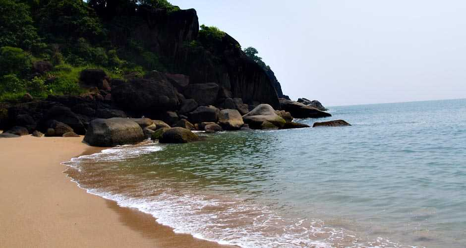

SALCETTE

Dudhsagar Falls
Weather : N.A.
Time Required : 6 - 7 Hours to Trek
Entry Fee : Entry Fee: Nominal Charge INR 20
Still Camera: INR 300
Professional Camera: INR 5000
Jeep Charges: INR 150 per person
Dudhsagar Falls, Salcette Overview
One of India's tallest waterfalls, the Dudhsagar Falls is located inside the Mollem National Park. The majestic falls are a little farther inland approximately 60 km from Panaji on the Goa - Karnataka Border. Literally translating to Sea of Milk , the 310 m high waterfall is divided into four tiers on the Mandovi river and resemble a heavy rush of milk flowing effortlessly down the hill. While most people arrive at the Dudhsagar falls by jeep or by their own private transport from Panaji and nearby areas, others choose to visit the falls through a train journey or by trekking. The famous Dudhsagar Railway trek is closed to the public but the trek to the lower falls is still open.The Dudhsagar falls should be visited during the monsoon when it is in full flow and the surrounding deciduous forests are at their verdant best. However, reaching the falls during monsoon if difficult and it is closed if the water level gets too high.

Thalassa
Weather : N.A.
Timings : Monday - Sunday: 8:00 AM to 1:00 AM
Time Required : 1 - 2 hrs
Entry Fee : Cost for Two: INR 2000
Top Dishes : Cocktails
Pasta
Risotto
Seafood
Wine
Pizza
Tips : It is recommended to make a prior booking of the table as Thalassa remains crowded
Must-try : Mediterranean prawn platter
Small Greek chicken pizzas
King prawns in garlic sauce
Flaming saganaki
Pork gyros
Steamed mussels in ouzo sauce
Thalassa ,Salcette Overview
Perched atop rocky cliffs, Thalassa- The Greek Taverna is one of the most popular restaurants in Goa. Having moved out to the backwaters along with Siolim (from its prior location of Vagator hilltop), Thalassa is famous for its signature cocktails and sunsets. Reverberating with the cultural flavour of Greece, it serves authentic Greek Mediterranean cuisine.Ideated, owned and conceived by Mariketty (known to be the most hospitable hostess), the open-air restaurant boasts of comfortable cushioned chairs, rustic wooden decor, lively music and a gorgeous ambience. One of the main highlights of Thalassa is the live-fire show and dance performances like Sirtaki and Zorba.Boasting of delectable cuisines and a mouth-watering menu, the restaurant has been visited by big-shot celebrities like Robert de Niro and other Bollywood stars.

Basilica of Bom Jesus
Weather : N.A.
Timings : Monday - Saturday: 09:00 AM - 06:30 PM
Sunday: 10:30 AM - 06:30 PM
Time Required : 1-1.5 hours
Entry Fee : No entry fee
Constructed in : Started in 1594 and completed in 1605
Mass Timings : Sunday: 8:00 AM, 9:15 AM and 6:00 PM in Konkani, 10:15 AM in English
Monday to Saturday: 7:00 AM - 8:00 AM and 6:00 PM
A mass is held at the chapel of St Francis Xavier on 6th of every month: 10:00 AM
Holy Hour: First Friday of every month at 5:00 PM
Must View : Statue of St Francis Xavier
Chapel of St Francis Xavier
Modern art gallery
Basilica of Bom Jesus, Salcette Overview
The Basilica of Bom Jesus Church located in Goa is one of a kind in India and is known for its exemplary baroque architecture. Built in 1594 and consecrated in 1605, the building of this church coincides with the beginning of Christianity in India. The church is located in Old Goa in Bainguinim about 10 km away from Panjim. The oldest church in Goa, it holds the remains of St. Francis Xavier, a special friend of St. Ignatius Loyola with whom he founded the Society of Jesus (Jesuits). Even after 400 years, the remains are in good condition and are taken out once every decade.
A site with rich cultural and religious significance, the Basilica of Bom Jesus has been declared a World Heritage Site by UNESCO. Literally translating to 'Holy Jesus', this is the only church in Old Goa that is not been plastered on the outside. The facade of the church has triangular roofing which is delicately carved with the initials 'IHS', which is an abbreviation for Jesuit emblem meaning 'Jesus, Saviour of Men'. Inside, the floor of the Basilica is made of marble mosaic with precious stones, giving it a solemn appearance. The interior is embellished with a screen that runs from the floor to the ceiling and has the image of St. Ignatius Loyola protecting an infant Jesus. Above all is the image of the Holy Trinity, which is the most sacred symbol in Christianity. The Basilica of Bom Jesus is over 408 years old and is open to the public every day.

Butterfly Beach
Weather : N.A.
Timings : 6:00 AM - 10:00 PM
Time Required : 1-2 hrs
Entry Fee : No entry fee
Best Time to Visit : Early morning to spot dolphins
Butterfly Beach, Salcette Overview
A little to the south of Palolem in Cancona region of Goa lies the Butterfly Beach. This beach, also known as Honeymoon Beach, is in the form of a small cove surrounded by dense trees. One of the most secluded and lesser-known beach of Goa, the butterfly beach is mostly accessible by a boat (ferry) ride from the nearby beaches, which only adds to the charm.Enclosed by a thick forest on one side and leading to the open sea on the other, the beach has a unique and picturesque landscape. Butterfly Beach is also one of the few places in Goa to sight the playful dolphins. Avoid visiting the beach during the monsoon as the boat rides are mostly unavailable during heavy rainfall.\
Vehicles do not lead directly to Butterfly Beach and reaching here through land involves a challenging forest hike. However, this also makes for a wonderful opportunity to go trekking through a forest! Interestingly, Butterfly Beach is so named as the surrounding trees attract a wide variety of butterflies occasionally. It may also be because the beach itself is in the shape of a butterfly! Either way, it is just as pretty as one, especially during sunsets.
Precautions
- Beach Safety: Pay attention to safety flags and be cautious of strong currents.
- Cultural Respect: Dress modestly when visiting religious sites and show respect for local customs.
- Hydration: Stay well-hydrated, especially in the tropical climate.
- Food Safety: Enjoy local cuisine but choose reputable eateries to avoid stomach issues.
- Transportation Awareness: Negotiate fares with auto-rickshaw drivers in advance, and use reliable transportation options.